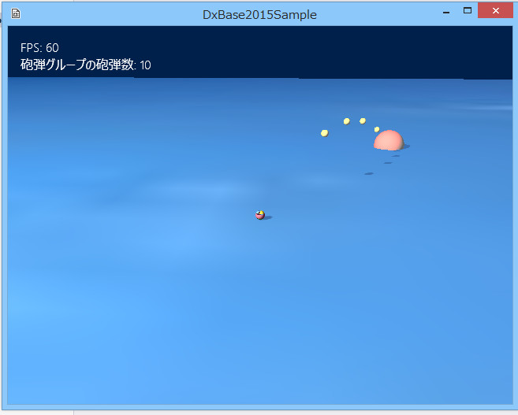

図1005a
左上の砲弾グループの砲弾数に注目してください。
void ShellBall::Refresh(const Vector3& StartPos, const Vector3& JumpVec){
SetUpdateActive(true);
SetDrawActive(true);
m_StartPos = StartPos;
m_JumpVec = JumpVec;
//Transform取得
auto Ptr = GetComponent<Transform>();
Ptr->SetScale(m_NowScale);
Ptr->SetPosition(m_StartPos);
//描画コンポーネント
auto PtrDraw = GetComponent<BasicPNTDraw>();
PtrDraw->SetDiffuse(Color4(1.0f, 1.0f, 0, 1.0f));
//重力を取り出す
auto PtrGravity = GetComponent<Gravity>();
//ジャンプスタート
PtrGravity->StartJump(m_JumpVec);
//今のステートをFiringStateに設定
m_StateMachine->SetCurrentState(FiringState::Instance());
//FiringStateの初期化実行を行う
m_StateMachine->GetCurrentState()->Enter(GetThis<ShellBall>());
}
//Bボタンで砲弾を発射する処理
void Player::ShellThrowMotion(){
float ElapsedTime = App::GetApp()->GetElapsedTime();
Vector3 Angle = GetAngle();
//砲弾の追加
auto PtrTrans = GetComponent<Transform>();
//プレイヤーの向きを得る
auto PlayerAngle = PtrTrans->GetRotation();
Vector3 ShellSpeed(sin(PlayerAngle.y), 0, cos(PlayerAngle.y));
ShellSpeed *= 10.0f;
Vector3 Velo = GetComponent<Rigidbody>()->GetVelocity();
Velo.y = 0;
//移動スピードを加算
ShellSpeed += Velo;
//打ち上げの上向きの初速度を追加（値は固定）
ShellSpeed += Vector3(0.0f, 6.0f, 0);
//グループ内に空きがあればそのオブジェクトを再利用
//そうでなければ新規に作成
auto Group = GetStage()->GetSharedObjectGroup(L"ShellBallGroup");
auto ShellVec = Group->GetGroupVector();
for (auto Ptr : ShellVec){
//Ptrはweak_ptrなので有効性チェックが必要
if (!Ptr.expired()){
auto ShellPtr = dynamic_pointer_cast<ShellBall>(Ptr.lock());
if (ShellPtr){
if ((!ShellPtr->IsUpdateActive()) && (!ShellPtr->IsDrawActive())){
ShellPtr->Refresh(PtrTrans->GetPosition(), ShellSpeed);
return;
}
}
}
}
//ここまで来たら空きがなかったことになる
//砲弾の追加
auto Sh = GetStage()->AddGameObject<ShellBall>(PtrTrans->GetPosition(), ShellSpeed);
//グループに追加
Group->IntoGroup(Sh);
}